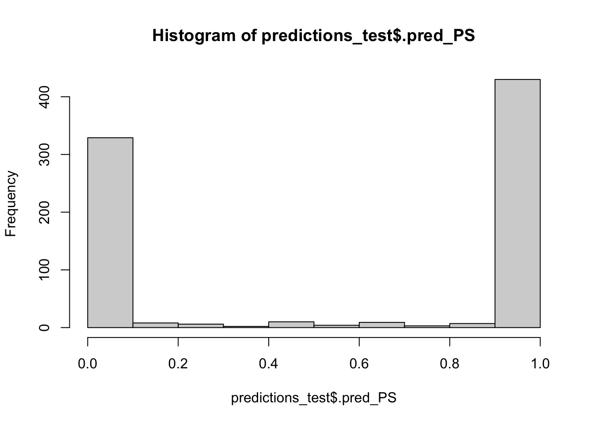
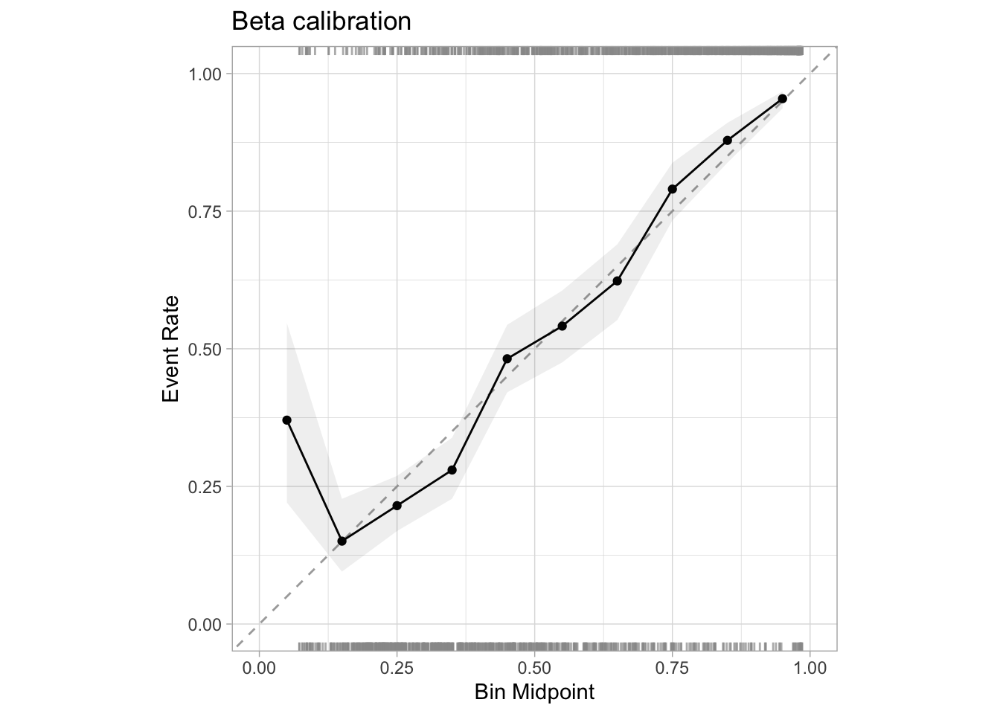

library(tidymodels)
library(probably)
library(discrim)
library(gridExtra)
tidymodels_prefer()
set.seed(12345)Goal
Our goal for this exercise sheet is to learn the basics of tidymodels for supervised learning, assess if a model is well-calibrated, and calibrate it with probably. We will do so by using a train-validate-test split: the model is first fitted on training data and then calibrated on validation data. Test data will be used to compare the performance of the un-calibrated and calibrated models. Later, we will see how probably can be used to construct more refined resampling workflows for calibration.
Required packages
We will use tidymodels for machine learning and probably for calibration:
Data: predicting cell segmentation quality
The modeldata package contains a data set called cells. Initially distributed by Hill and Haney (2007), they showed how to create models that predict the quality of the image analysis of cells. The outcome has two levels "PS" (for poorly segmented images) or "WS" (well-segmented). There are 56 image features that can be used to build a classifier.
Let’s load the data and remove an unwanted column:
data(cells)
cells$case <- NULL1 Checking cardinality properties
1.1 Creating a split with rsample
Let’s use initial_split() from rsample, a package integrated in tidymodels, to create a train-test-validate split. To do so, split the data twice: First, create a simple train-test split, and then split the training data again into training and validation data.
Hint 1:
You can find an overview of functions within rsample on the package website.
Hint 2:
In principle, you will need three functions to create the necessary split objects: initial_split(), training(), and testing().
NoteSolution
1.2 Training a Naive Bayes model
We’ll show the utility of calibration tools by using a type of model that, in this instance, is likely to produce a poorly calibrated model. The Naive Bayes classifier is a well-established model that assumes that the predictors are statistically independent of one another (to simplify the calculations). While that is certainly not the case for this data, the model can be effective at discriminating between the classes. Unfortunately, when there are many predictors in the model, it has a tendency to produce class probability distributions that are pathological. The predictions tend to gravitate to values near zero or one, producing distributions that are “U”-shaped (Kuhn and Johnson, 2013).
To demonstrate, let’s set up a Naive Bayes learner and train it using the training data.
Hint 1:
First, initialize a learner object. You can find a list of available learners here.
Hint 2:
Once the learner object has been created, train the model using the %>% pipe operator and the function fit().
NoteSolution
1.3 Predicting on unseen test data
Next, use the trained model to predict on unseen test data. In tidymodels, this will return two columns of predicted probabilities, one for "PS" and one for "WS". Select for the predicted probabilities of class "PS" since for binary classification, we only need one column representing label probabilities to compute the model performance in the next step. You can do this by repeatedly using the %>% pipe operator.
Hint 1:
You can use this code skeleton to produce the desired output:
predictions_test <- # the model # %>%
# predict probabilities on test data # %>%
select(.pred_PS) %>%
bind_cols(cells_test)
NoteSolution
1.4 Assessing model performance
We want to use two metrics from the yardstick package that comes with tidymodels to judge how well the model performs. First, the area under the ROC curve (ROC AUC) is used to measure the ability of the model to separate the classes (its mere ability to discriminate correctly). Second, the Brier score is used to measure how close the probability estimates are to the actual outcome values (its ability to express confidence in the label predictions). Compute the ROC AUC and the Brier Score on the test data predictions.
Hint 1:
Look at the functions available in yardstick to find the desired metrics.
NoteSolution
1.5 Assessing model calibration
Let’s assess if our model is well-calibrated. Spoiler: it is not. The first clue is the extremely U-shaped distribution of the probability scores:
hist(predictions_test$.pred_PS, breaks = (0:10)/10)
There are almost no cells with moderate probability estimates.
The probably package has tools for visualizing and correcting models with poor calibration properties.
The most common plot is to break the predictions into about ten equally sized buckets and compute the actual event rate within each. For example, if a bin captures the samples predicted to be poorly segmented with probabilities between 20% and 30%, we should expect about a 25% event rate (i.e., the bin midpoint) within that partition. Let’s do this with 10 and 5 bins using cal_plot_breaks() from the probably package.
NoteSolution
2 Platt scaling
The good news is that we can do something about this. There are tools to “fix” the probability estimates so that they have better properties, such as falling along the diagonal lines in the diagnostic plots shown above. Different methods improve the predictions in different ways.
The most common approach is Platt scaling, also called logistic calibration. This works in the following way: The original model is used to predict on the validation data set, returning predicted probabilities. We already know these probabilities are off, i.e., not well-calibrated. Then, we fit a simple logistic regression model, using the predicted probabilities from the original model as “x/feature” and the true labels as “y/target”. In this way, we stack a second model on top of the first one: Original Model -> Probabilities -> Logistic Regression Model -> Calibrated Probabilities.
If effective, the logistic regression model estimates the probability regions where the original model is off (as shown in the diagnostic plot). For example, suppose that when the model predicts a 2% event rate, the logistic regression model estimates that it under-predicts the probability by 5% (relative to the observed data). Given this gap, new predictions are adjusted up so that the probability estimates are more in-line with the data.
2.1 Platt scaling with {base R}
2.1.1 Task
Let’s do this with base R. First, we need predictions of the model on the validation data:
# Create predictions on the validation set
predictions_val <- nb_fit %>%
predict(cells_val, type = "prob") %>%
select(.pred_PS) %>%
bind_cols(cells_val)Also, we transform the class variable (a factor) to binary (0-1) format:
predictions_val$class <- abs(as.numeric(predictions_val$class) - 2)Now, fit a logistic regression with y as the true label of the validation data and x as the predictions of the uncalibrated model on the validation data.
Hint 1:
As we want to fit a logistic regression model, you can use glm().
NoteSolution
2.1.2 Discussion
How do we know if this works? As we used training data to fit the Naive Bayes model and validation data to fit the logistic regression model, we need to use testing data to assess the performance of the combined (and hopefully well-calibrated) model:
# Use logistic calibration model to adjust predictions on test data
predictions_test_calibrated <- predictions_test
predictions_test_calibrated$.pred_PS <- predict(calibrator_logreg, newdata = predictions_test_calibrated, type = "response")How well-calibrated is this model? Assess the model performance by checking the ROC AUC and the Brier score of the calibrated model and the model calibration by looking at the histogram of predicted probabilities and by comparing calibration plots of the calibrated model to the uncalibrated model (as in exercises 4 and 5).
NoteSolution
2.2 Platt scaling with {probably}
2.2.1 Task
Now, apply Platt scaling using cal_* functions from probably.
Hint 1:
You can use the code skeleton below:
# Make predictions on the validation set (again because probably wants a factor as target)
predictions_val <- nb_fit %>%
predict(cells_val, type = "prob") %>%
bind_cols(cells_val)
# Calibrate the model using validation data
## -> your code here <- ##
# Predict with original model on test data
predictions_test <- nb_fit %>%
predict(cells_test, type = "prob") %>%
bind_cols(cells_test)
# Apply calibration model on original model predictions
## -> your code here <- ##Hint 2:
Take a look at the function reference. You will need one function to compute the calibration model, and another function to recompute the model probabilities. As a sanity check, we should score the same metrics as when using base R.
NoteSolution
2.2.2 Discussion
Let’s check if the metrics for the approach using probably match with the results we got using base R.
NoteSolution
3 Isotonic regression
A different approach to calibration is to use isotonic regression. In a manner similar to logistic calibration, use probably to calibrate the Naive Bayes model using isotonic regression. Do we improve the calibration in comparison to Platt scaling?
NoteSolution
4 Resamping for Calibration with probably
The advantage of using probably for calibration is that one can easily access different calibration methods within a unified framework. In the examples above, we have used a simple train-validate-test split to perform calibration and evaluate the resulting models. In practice, we would prefer to use resampling, e.g. as in cross-validation (CV), to assess calibration methods. This can also be done with probably. In fact, we can use the cal_validate_*() function family to calibrate models contained in resample_results objects created with tidymodels. Fit 10 Naive Bayes models using 10-fold CV and calibrate each of these models using beta calibration, another calibration method.
Hint 1:
You can use the following code skeleton, detailing the required steps:
# Create CV specification
cells_cv <- vfold_cv(...)
# Specify metrics
metr <- metric_set(...)
# Save predictions
ctrl <- control_resamples(save_pred = TRUE)
# Model workflow
bayes_wflow <- workflow() %>%
add_formula(class ~ .) %>%
add_model(naive_Bayes())
# Fit resamples
bayes_res <- fit_resamples(...)
# Calibrate each of the models
beta_val <- cal_validate_beta(...)
# Evaluate calibrated models
collect_metrics(beta_val)
NoteSolution
Let’s inspect the calibration plot:
collect_predictions(beta_val) %>%
filter(.type == "calibrated") %>%
cal_plot_breaks(truth = class, estimate = .pred_PS, num_breaks = 10) +
ggtitle("Beta calibration")
Summary
In this exercise sheet we learned how to fit a classification model on a training task and how to assess its performance on unseen test data with the help of tidymodels. We showed how to split data manually into training and test data, and use probably to assess if a model is calibrated. We discussed how Platt scaling/logistic calibration and isotonic regression can be used to improve calibration (although not perfectly calibrate the model here). Also note that in a real-world scenario, we would have wanted to refit the Naive Bayes classifier on the combined train-validate data once we have calibrated it, to mirror nested resampling and reduce bias. This tutorial is a modified version of the tidymodels introduction to calibration, used under CC BY-SA license.